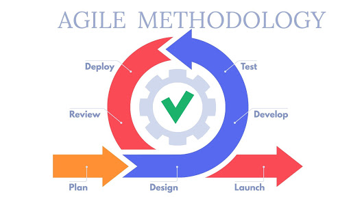

Introduction
Nyanga Family Clinic was founded in 1989 by the late Dr H.K Dambanemuya. It was situated at Mangondoza Township in Nyanga and later moved to Rochdale the central business district at which it is currently sited. It was founded because there was no private practitioner in the whole of Nyanga district and at some point there was no doctor at the general hospital resulting in the community travelling at least 100 kms for consultation. Nyanga family clinic is a general practice hence everyone is the target population especially the Nyanga District residents. Every patient first sees a general practitioner before getting to a specialist. It offers services such as consultation, Family planning services and counselling, scaling, antenatal care but no deliveries and scanning services. It is registered under the Ministry of Health and has been fully functional since 1989. It is currently being run by Sister Damba who is a qualified nurse and Doctor T.T Chiramba.
1.0 Mission Statement
Providing the best patient care by treating patients as family with sensitivity and empathy
1.1 Purpose
To cover primary care needs for outpatients in the community dedicated to healing and excellence
Project Name and Description
The project name is going to be Patient Record Management System. It will be a process of creating a database for patient’s files with different access rights with a user friendly user interface. The nurse and doctor would be having access to the patients’ history, diagnosis and prescription whilst the receptionist would just be able to access basic information such as the person’s address, name, and payment details. It will improve data storage access and enable data driven decision making such as daily reports.
Problems of the Current System
The current system is a manual or traditional filing system, everything is paper based. Nyanga family clinic was founded in 1990, making it 30 years old. In the health sector patient information is very confidential and vital, meaning it should be kept safe and should be readily available. Since numbers of patients have been accumulating over the years, Storage space has become a problem and some of the papers are now torn and dusty. The file location process is time consuming and tedious because there are a lot of files and they can be easily misplaced as they are more prone to human error. Unauthorized access of files is not restricted since any staff member can just open the file cabinet hence data security is improvised. The main problem with the current system as of recent is that they now have digital scanning systems, Implantable cardiac defibrillator (ICD) and hardware components such as iPads, and MacBooks which record the information their medical devices and their patient information is still in paper.
Proposed System

Figure 1: An overview of proposed system.
I propose tp develop an Electronic Patient Records (EPR) software application. The software will be a web-based application developed using the Python Flask Web Framework. I will rely on modern front-end HTML, CSS, and JavaScript to build the user interface. The web application will also comprise a database back-end system developed in SQLlite. Figure 1 provides a general overview of the software system.
Objectives of the project:
Primary objectives
- To develop a digital health system with an interface and database to store patients’ records
- To computerize the billing system and automate billing systems
Secondary objectives
- To provide more secure and efficient data storage and instant access to records
- To enable data-driven decision making
Scope of the project
This study is focused on designing a web based online patient record management system. The system will be made specifically for implementation at Nyanga Family Clinic.
Assumptions
- That the doctors and staff are capable of using the system
- That the staff members are ready to migrate to a computerized system
- That the clinic has reliable internet connectivity
Limitations
The software system is web-based and cannot be accessed without an internet connection. Since the software is web-based, it is also slower compared to local server-based or desktop applications.
Lifecycle model
The developer will use the agile lifecycle model since this project/ system is solely based on iterative and incremental development to satisfy customer requirements and needs. The software created should be highly responsive to customer feedback. When the software is developed it is tested and taken to be reviewed by the customer if it fails to meet the customer’s requirements the developer has to fix or redevelop the software. Below is a diagram illustrating agile development model:

Figure 1.1: Illustration of Agile Development Model. Source